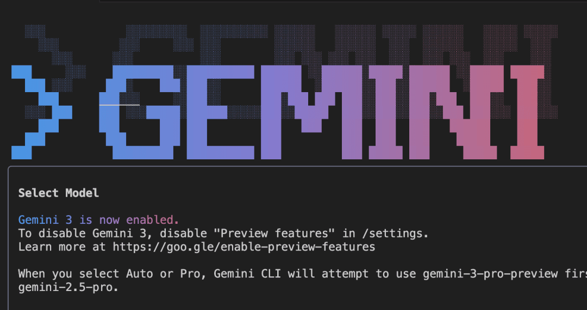
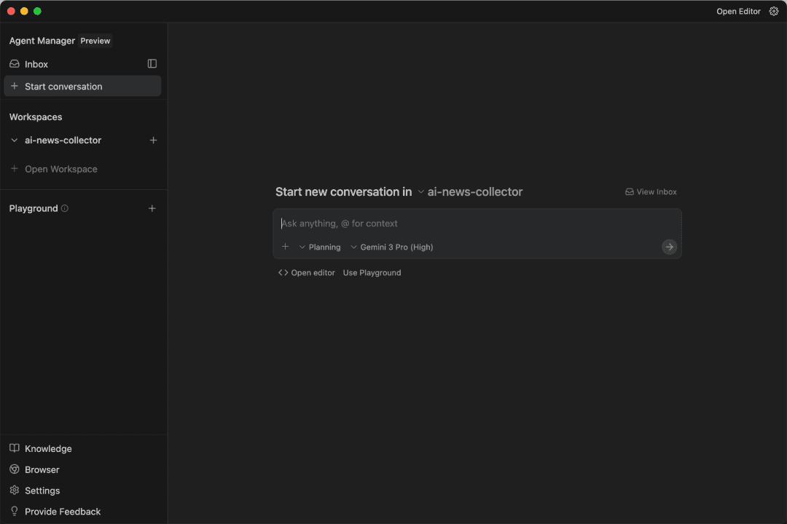

Gemini CLI 全指令速查手册
Gemini 3.0 今天正式上线啦！

为了让大家快速上手Gemini CLI开发，骁哥特地整理了一本手册
斜杠指令大全
一、项目与记忆管理
如何让Gemini CLI 更懂你的项目，并且记住你说过的话
- /init (项目初始化)
第一次在一个新项目里用 Gemini CLI 时，先敲这个。它会分析你的目录结构，自动生成一个 GEMINI.md 配置文件。相当于给 AI 发了一份"入职指南"（和claude code 的claude.md性质一样），让它秒懂你的项目规范
- /clear (重置新开会话)
它会清空当前的对话上下文（记忆）。当你准备开始一个全新的任务时，可以用它来省钱，同时防止 AI 产生幻觉
- /chat (对话管理)
list：列出所有存档 save
<tag>：保存当前进度（例如：/chat save 修复登录bug） resume<tag>：读取存档，恢复现场 delete<tag>：删除存档 share<file>：把对话导出为 Markdown 或 JSON，方便发给同事看
- /memory（长期记忆管理）
show：看看它记住了什么 add：手动植入记忆（例如："记住我用pnpm"） refresh：强制刷新记忆。 list：列出当前生效的 GEMINI.md 文件路径
- /directory (工作区管理)
add / show：把当前目录以外的文件夹也加进来，让 AI 能跨项目分析代码。
- /compress (压缩)
把冗长的对话记录压缩成摘要。省 Token 神器，防止聊久了 AI 变笨
二、高阶开发集成
一些高级用法
- /copy (一键复制)
一键复制上一次生成的代码块，不用鼠标划选
- /mcp (MCP 协议)
管理 MCP Servers 包含 list (列表), desc (详情), schema (架构), auth (鉴权), refresh (重启)
- /setup-github (GitHub 配置)
全自动帮你设置 GitHub Actions 工作流，CI/CD 一键搞定
- /ide (IDE 集成)
install：给 VS Code 安装插件 enable / status：开启或检查 IDE 联动状态
- /extensions (扩展插件)
管理 CLI 的插件生态（list, update, explore, restart）
三、系统与偏好
调整系统偏好，用起来更顺手
- /model (模型切换)
配置你想用的模型
- /settings (设置)
查看和编辑 CLI 的全局配置文件
- /editor (外部编辑器)
设置你想用哪个软件打开长文本（比如 VS Code）。
- /theme (主题)
切换 CLI 的配色皮肤
- /vim (Vim 模式)
开启/关闭 Vim 键位绑定（Vim 党专属）
- /terminal-setup (终端键位适配)
专门用来解决 VS Code、Cursor、Windsurf 等终端里多行输入键位冲突的问题
- /auth (账号)
切换登录方式
四、信息查询与反馈
遇到问题或者想看说明书时用
- /tools (工具列表)
查看当前 AI 被授权使用了哪些工具（如 FileSystem, Terminal）。
- /stats (统计)
model / tools：查看 Token 使用量和工具调用统计。
- /help (帮助)
查看所有指令
- /docs (文档)
直接在浏览器打开 Gemini CLI 的官方文档。
- /about (关于)
显示版本信息。
- /privacy (隐私)
显示隐私政策（代码会不会被上传等说明）
- /bug (报错)
遇到 Bug 了？用这个提交反馈
键盘快捷键
核心大招
- Ctrl + Y ： 狂暴模式 (Toggle YOLO mode)
开启后，所有命令自动执行，不再询问。老手刷代码专用
流程控制
Ctrl + C ：退出程序 / 强行打断 AI 生成。
Ctrl + L ：清屏（Clear Screen），只清显示不清记忆。
Esc ：取消当前操作 / 双击清空输入框。
Enter ：发送消息。
编辑与光标
Ctrl + J：强制换行。不想发送只想换行时用。
Ctrl + X 或 Meta + Enter：**外部编辑。**呼出 Vim/VS Code 来写超长 Prompt。
Ctrl + S：选择模式。 进入文本选择状态，方便复制终端内容。
Alt + Left / Right：光标跳跃。按单词快速移动光标。
Shift + Tab：自动接受 (Auto-accept)。新版 IDE 模式下，快速接受 AI 的修改建议
历史与滚动
Up / Down：查看历史 Prompt
Page Up / Down：向上/向下滚动屏幕页面
最后总结
以上就是Gemini CLI最新版本的指令速查，供大家快速上手
目前Gemini 3.0在Gemini CLI中仅对Ultra用户开放。如果你迫不及待的想体验Gemini 3.0 AI编程，可以去Cursor、Antigravity等IDE中使用

骁哥今天体验了一天Gemini 3.0 AI编程，第一感觉：编程能力不及GPT-5.1-Codex、Claude-Sonnet-4.5
但在UI视觉设计上确实厉害，这审美，比Codex强了一万个Claude！！
提示词：尽你最大的可能，给我设计一个尽可能炫酷的个人主页html
以后UI设计可能就要交给Gemini 3.0来完成啦
本期就这样，我是AI编程骁哥，下期见！